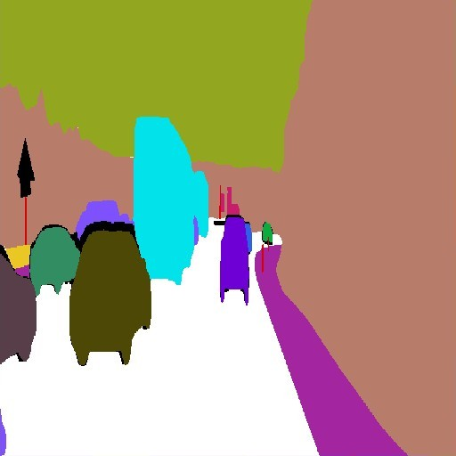
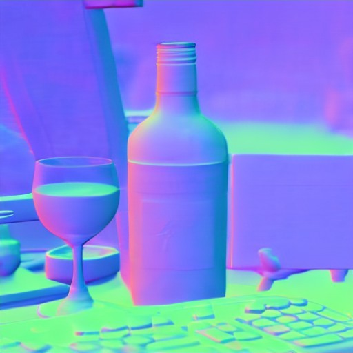

Unofficial open-source reproduction study
Open-Vision-Banana
Re-implementing Image Generators are Generalist Vision Learners (Vision Banana, arXiv:2604.20329) on public backbones and public data, and reporting exactly what transfers and what does not.
Not affiliated with, endorsed by, or verified by the paper's authors or Google DeepMind. Nano Banana Pro, the in-house training data and the human study are closed; nothing here reproduces them.
Overview
One interface, five vision tasks
Semantic, instance and referring segmentation, metric depth and surface normals are all emitted as RGB images selected by the prompt and decoded back to structured outputs: the paper's method, implemented one-to-one where the paper is explicit.
Open backbone, open data
Qwen-Image-2.1 / Qwen-Image-Edit as the natively image-conditioned base; Hypersim, TartanAir, ADE20K, COCO/LVIS, RefCOCO and OmniEdit as public substitutes for the paper's in-house data, with a strict zero-shot audit on every manifest.
Measured, not claimed
Every number on this page is rendered from an evaluation JSON that records its inference protocol; the untuned base model is a row in every table; differences below the measured noise floor are reported as "no significant difference".
-

Vision target Metric depth, normals, semantic, instance and referring masks. Hypersim, TartanAir, COCO, ADE20K, RefCOCO - RGB encoding Eq. 1 power transform, cube-edge colormap, legend in the prompt. Paper §3.1–3.2, verified
- Image generator Qwen-Image-2.1 (open). Source image as visual tokens plus reference latents; LoRA instruction-tuning mixed with generation replay. One set of weights; the prompt selects the task
-

Decoder Inverse colormap to metres, nearest legend colour, Appendix A clustering. τ = 14, 16-connectivity, γ = 5 - Metrics δ1, AbsRel and angle error; mIoU, cgF1 and cIoU; strict zero-shot. Base-model row in every table
Vision target, RGB encoding, image generator (LoRA instruction-tuning, mixed with generation replay), generated RGB, decoder, metric. The same weights serve every task; only the prompt changes.
Method as implemented
Encodings (paper §3.1–3.2, Appendix A)
Metric depth
Power transform f(d) = 1 − (1 − d / λc)λ+1, λ = −3, c = 10/3, then a piecewise-linear path along the RGB-cube edges: black, red, yellow, green, cyan, blue, magenta, white (Fig. 5, verified against the figure). Inverse: project onto the nearest segment. Training augments with Plasma, Inferno, Viridis and grayscale.
Normals
Hover the sphere
Camera frame +x right, +y up, +z out; R = (1−x)/2, G = (1+y)/2, B = (1+z)/2. A surface facing the camera is always rgb(128, 128, 255).
Semantic
Open-vocabulary; the prompt carries the class-to-colour legend in one of four styles (RGB-tuple JSON, named-colour JSON, natural language, hex); decode = nearest legend colour.
Instance
The prompt gives only the class and background colour; the model picks a colour per instance; decoded with the five-stage Appendix A algorithm (τ = 14, 16-connectivity, θsize = 2·10⁻⁴, 3×3 erosion with θ = 0.1, γ = 5.0).
Referring
Fig. 4 (c)/(d) template, white target on black, kept identical across training, inference and evaluation.
Training recipe
Repository choices: the paper states none.
| Backbone | Qwen-Image-2.1 (source image as Qwen3-VL visual tokens + reference latents) |
| Tuning | rsLoRA r32/α64 on attention + MLP, flow matching, AdamW 1e-4, cosine, 30 k steps, 512² canvas |
| Mixture | six tasks; vision_ratio 0.5 (paper: "very low", no number) with OmniEdit edit-pair replay |
| Augmentation | depth colormaps, four semantic prompt styles with 50 % legend re-colouring, aspect-preserving crops |
| Zero-shot | --protocol strict: path patterns + COCO image-id exclusion (RefCOCOg val/test live inside COCO train2014); Cityscapes train rejected |
| Inference | 50 steps, CFG 4.0, seed 42, native-resolution scoring, pinned and written into every result JSON |
Results
Charts and tables are rendered from data/results.json, which is generated from the evaluation JSONs (scripts/render_results_tables.py). "Base" is the untuned backbone with identical prompts and decoders; "paper" rows are the original paper's numbers for context only, on a different, closed base model.
All rows
Reproduce
Full plan with research questions, per-experiment done-criteria and the report outline: exp_setting.md. Data sources: docs/DATASETS.md.
# data: download -> prepare -> merge -> strict zero-shot audit -> gates (CPU node)
bash scripts/run_e1_full.sh --to merge
# train 30k steps with auto-resume, then evaluate 5k/15k/30k with the pinned protocol (GPU node)
RUN_DIR=output/e1 nohup bash scripts/run_e1_full.sh --from train > output/e1.log 2>&1 &
# machine-checked gates at every stage
python scripts/check_experiment_gates.py data|run|eval ...Citation
Please cite our paper and the original Vision Banana paper; cite this repository for the implementation.
@article{lin2026ovb,
title = {Open Vision Banana: An Open Framework for Unified Visual Perception
through Generation in {RGB} Space},
author = {Lin, Xu and Yao, Ruilin and Xu, Haoran and Wang, Zixiang and Ma, Ming and
Zhao, Yu and Miao, Pu and Liu, Chonghan},
journal = {arXiv preprint arXiv:2611.28489},
year = {2026}
}
@article{visionbanana2026,
title = {Image Generators are Generalist Vision Learners},
author = {Gabeur, Valentin and Long, Shangbang and Peng, Songyou and others},
journal = {arXiv preprint arXiv:2604.20329},
year = {2026}
}
@misc{openvisionbanana2026,
title = {Open-Vision-Banana: an open reproduction study of Vision Banana on public backbones and public data},
author = {{Open-Vision-Banana contributors}},
year = {2026},
howpublished = {\url{https://github.com/isLinXu/open-vision-banana}}
}